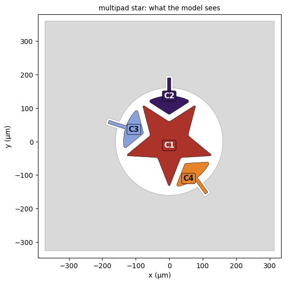
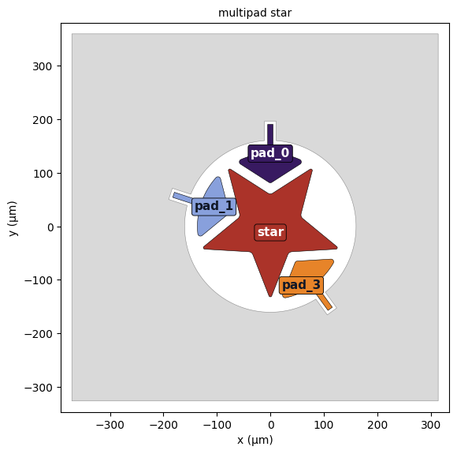
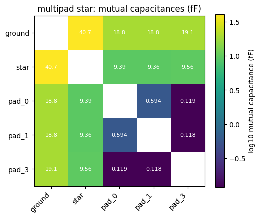
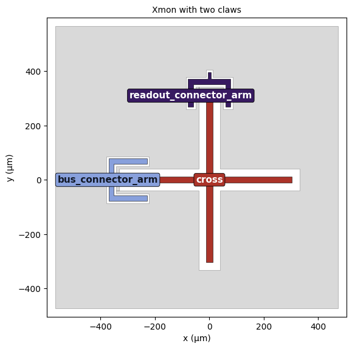
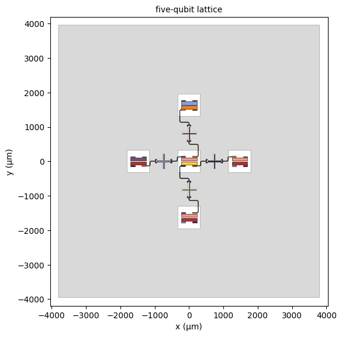
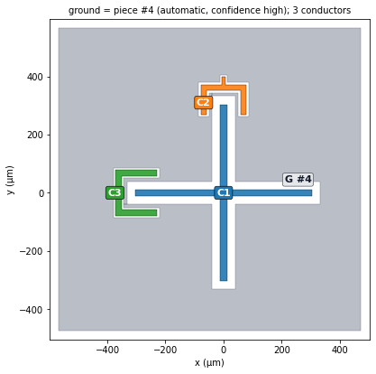
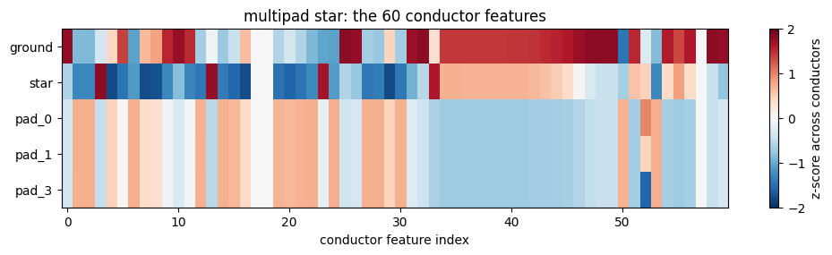

Tutorial 11: Predicting Capacitance Matrices from a GDS file using ML#
In our latest paper, “QCap: a physics-corrected graph neural network for the capacitance matrix of any planar superconducting device layout”, we have shown how we developed a capacitance foundation model that can be used to predict the Maxwell capacitance matrix of ANY planar superconducting device layout on ANY substrate. The results are within 1% agreement with its counterpart accurate Q3D simulation and run in seconds on a CPU. The paper page also has videos and more tutorials.
Note: the models need the optional ML extra, pip install "squadds[ml]", and the GDS export from quantum-metal needs the gds extra, pip install "squadds[gds]".
[1]:
%load_ext autoreload
%autoreload 2
%matplotlib inline
Why the Maxwell capacitance matrix?#
Capacitors are the workhorse of any superconducting processor and are structures that designers spend a lot of time optimizing layouts for. The hope of this ML model is to reduce the iteration times of device design lifecycle.
Now, as for why the Maxwell matrix, we motivate that by the following example that we will walk through in this tutorial:
Let’s say we are laying out a coupler that has to talk to three qubits at once: a five-fingered star in a circular ground pocket, with a pad sitting in three of its valleys (a multipad star). Before we send it to the fab, we want to know:
the coupling capacitance between the star and each pad (it sets the coupling strength \(g\)),
the self capacitance of every island (it sets the charging energies \(E_C\)), and
the pad-to-pad capacitances we never asked for (they set the crosstalk).
All of these are entries of one matrix. For \(N\) conductors (ground included), the charges and the voltages are related by the Maxwell capacitance matrix
The diagonal entry \(C_{ii} > 0\) is the self capacitance of conductor \(i\) (its charge when it sits at 1 V and everything else is grounded), and the off-diagonal entries are negative, \(C_{ij} = -C^{\rm mutual}_{ij} < 0\). Every signal row sums to a small non-negative number (the field lines that escape to infinity), so \(C_{ii} \geq \sum_{j \neq i} |C_{ij}|\).
A circuit Hamiltonian needs every entry at once: the charging energy of island \(i\) is \(E_{C,i} = \frac{e^2}{2}\,(C^{-1})_{ii}\), where \(C\) is the signal block (ground removed), and an inverse mixes every entry of the matrix. One two-terminal simulation per pair does not give us that.
Throughout SQuADDS the matrix is in fF, with ground first (row and column 0, named G).
Setting up#
We’ll use quantum-metal without its GUI, so let’s tell it that before importing anything.
[2]:
import os
os.environ["QISKIT_METAL_HEADLESS"] = "1"
import warnings
warnings.filterwarnings("ignore")
[3]:
import time
from pathlib import Path
import matplotlib.pyplot as plt
import numpy as np
import pandas as pd
We’ll keep every file we write in one folder next to this notebook.
[4]:
work = Path("tutorial11_files")
work.mkdir(exist_ok=True)
Drawing a multipad star#
SQuADDS includes the quantum-metal component for every family of the planar capacitance dataset used to train the model. The multipad star is GeneralizedCapStar: pad_enables switches a pad on (1) or off (0) in each valley, and the star has a short feed line (cpw_length) to the north.
[5]:
from qiskit_metal import designs
from squadds.components import GeneralizedCapStar
Importing SQuADDS also loads scqubits, which switches the inline figures of the notebook to vector formats. Let’s switch them back to PNG so the plots stay light.
[6]:
from matplotlib_inline.backend_inline import set_matplotlib_formats
set_matplotlib_formats("png")
[7]:
star_options = dict(
n_points="5",
star_outer_radius="136.4um",
star_inner_radius="59.04um",
tip_radius="2.73um",
valley_radius="8.8um",
star_rotation="54",
gap="18um",
pocket_radius="160.35um",
pad_side_gap="6um",
pad_enables="1,1,0,1,0",
cpw_length="30um",
cpw_width="10um",
cpw_gap="6um",
)
[8]:
star_design = designs.DesignPlanar({}, overwrite_enabled=True)
GeneralizedCapStar(star_design, "star", options=star_options)
star_design.rebuild()
Now let’s export it with squadds.layouts.qmetal_gds. With include_ground_domain=True it writes the layer convention the models read: a square ground plane on 1/0 that reaches 169 µm past the metal, with the component’s own etch cut out of it, and every piece of signal metal on 1/10. minimum_ground_clearance_um only closes the open end of the feed line (we use the CPW gap, 6 µm).
Using a GDS that was not drawn with SQuADDS
Any GDS works. prepare_layout and predict only need to know which metal is the ground and which metal are the conductors, and they take the same arguments:
your file |
what to pass |
|---|---|
ground and conductors on other layers |
|
ground and conductors on one layer |
that layer for both; the ground is detected for you (see Ground and conductors on one layer below) |
several cells in the file |
|
only part of a chip |
|
Metal on any other layer (labels, port markers, junctions) is not modelled. Layers you pass in ignore_layers are skipped silently.
prepare_layout also repairs what breaks the convention and tells you about it in layout.warnings: touching or overlapping polygons on the conductor layer become one conductor, a conductor that touches the ground is merged into the ground net, and zero-area polygons are dropped. So always plot the prepared layout before you trust a number.
[9]:
from squadds.layouts.qmetal_gds import export_qgeometry_gds
[10]:
star_gds = work / "multipad_star.gds"
export_qgeometry_gds(star_design, star_gds, include_ground_domain=True, minimum_ground_clearance_um=6)
star_gds
[10]:
PosixPath('tutorial11_files/multipad_star.gds')
The input GDS to the model#
Since the input to the model is the GDS file, let’s look at what the model sees.
prepare_layout reads a GDS exactly the way the predictor does: the ground is one net, and every connected body on the conductor layer is one conductor, named C1, C2, … in file order.
[11]:
from squadds.ml.capacitance import prepare_layout
[12]:
star_layout = prepare_layout(star_gds)
star_layout.names
[12]:
['C1', 'C2', 'C3', 'C4']
The prepared layout draws itself with .plot(): the ground in grey and every conductor in its own colour, named as the predictions name it.
[14]:
star_layout.plot(title="multipad star: what the model sees");

Four conductors and the ground, the star (with its feed line) and three pads. C1, C2, … are not very telling, so let’s name every body after the quantum-metal shape it overlaps the most.
[15]:
from shapely import affinity
def name_conductors(design, layout):
"""{predictor name: quantum-metal shape name} for every conductor body (ground -> "ground")."""
shapes = {}
for table in ("poly", "path"):
df = design.qgeometry.tables[table]
for row in df[~df["subtract"].astype(bool) & ~df["helper"].astype(bool)].itertuples():
g = row.geometry if table == "poly" else row.geometry.buffer(row.width / 2, cap_style=2)
shapes[row.name] = affinity.scale(g, 1000, 1000, origin=(0, 0)) # Metal mm -> GDS µm
names = {"G": "ground"}
for name, body in zip(layout.names, layout.conductors):
names[name] = max(shapes, key=lambda s: body.intersection(shapes[s]).area)
return names
[16]:
star_names = name_conductors(star_design, star_layout)
star_names
[16]:
{'G': 'ground', 'C1': 'star', 'C2': 'pad_0', 'C3': 'pad_1', 'C4': 'pad_3'}
[17]:
star_layout.plot(labels=star_names, title="multipad star");

Predicting the capacitance matrix#
The models are open-source and available on Hugging Face (SQuADDS/QCap).
The load_model method downloads the checkpoints once, checks the sha256 of every file against the manifest shipped inside SQuADDS and refuses anything that does not match. If you already have a local copy of the models, point the environment variable SQUADDS_CAPML_MODELS at its folder and nothing is downloaded.
We release two models, both trained on all the data, and we pick one by its name:
model |
what it does |
use it for |
|---|---|---|
|
solves the physics of the layout, then corrects it with the networks |
every number you build on |
|
skips the field solve: a learned surrogate stands in for the physics |
screening large design spaces |
QCap is the released version of the main model of our paper.
[18]:
from squadds.ml.capacitance import CapacitancePredictor, load_model
[19]:
qcap = load_model("QCap")
qcap.name, qcap.title
[19]:
('QCap',
'QCap (~1 s): extrapolated physics R(1.5, 3) on the corrected prior + residual networks, compiled solver')
A CapacitancePredictor wraps a model. threads is the number of CPU threads per prediction (2 by default; for a given machine and thread count the results are deterministic).
[20]:
predictor = CapacitancePredictor(qcap, threads=2)
predictor
[20]:
CapacitancePredictor('QCap', threads=2)
[21]:
res = predictor.predict(star_gds)
res
[21]:
CapacitanceResult(QCap, N=5, names=['G', 'C1', 'C2', 'C3', 'C4'], total 2.45 s, checks passed)
res.to_dataframe() gives the matrix as a table (fF, ground first). Let’s put our names on it.
[22]:
C = res.to_dataframe().rename(index=star_names, columns=star_names)
C.round(3)
[22]:
| ground | star | pad_0 | pad_1 | pad_3 | |
|---|---|---|---|---|---|
| ground | 131.929 | -40.698 | -18.814 | -18.800 | -19.061 |
| star | -40.698 | 70.779 | -9.386 | -9.364 | -9.562 |
| pad_0 | -18.814 | -9.386 | 29.278 | -0.594 | -0.119 |
| pad_1 | -18.800 | -9.364 | -0.594 | 29.248 | -0.118 |
| pad_3 | -19.061 | -9.562 | -0.119 | -0.118 | 29.215 |
The diagonal holds the self capacitance of every island, the off-diagonal entries are minus the mutual capacitances, and the ground row and column come first, exactly as a Q3D export would give them.
Let’s plot the mutual capacitances on a log scale.
[23]:
mut = -C.where(~np.eye(len(C), dtype=bool))
fig, ax = plt.subplots(figsize=(5.5, 4.5))
im = ax.imshow(np.log10(mut), cmap="viridis")
ax.set_xticks(range(len(C)), C.columns, rotation=45, ha="right")
ax.set_yticks(range(len(C)), C.index)
for i in range(len(C)):
for j in range(len(C)):
if i != j:
ax.text(j, i, f"{mut.iloc[i, j]:.3g}", ha="center", va="center", color="w", fontsize=8)
fig.colorbar(im, label="log10 mutual capacitance (fF)")
ax.set_title("multipad star: mutual capacitances (fF)");

Physical checks#
Every prediction comes with the checks a physical Maxwell matrix must pass:
symmetric: \(C_{ij} = C_{ji}\),diagonal_positiveandoffdiag_all_negative: the Maxwell signs,closure: every signal row sums to a value \(\geq 0\),positive_definite: the signal block has only positive eigenvalues (otherwise the electrostatic energy \(\frac{1}{2} V^T C V\) could be negative).
[24]:
pd.Series(res.checks)
[24]:
symmetric_max_abs 0.0
symmetric True
diagonal_positive True
offdiag_all_negative True
closure_min_row_sum 0.354715
closure True
signal_block_min_eig 23.08647
positive_definite True
passed True
dtype: object
Timing#
res.timing_s breaks the wall time into the stages of the pipeline: reading the layout, the geometric embedding (geometry_s), the extrapolated physics prior (prior_s, two thin-film field solves) and the networks (network_s).
[25]:
pd.Series(res.timing_s).drop("cache_hits")
[25]:
prepare_s 0.007313
load_s 0.607775
geometry_s 0.573389
prior_s 1.875108
prior_levels_s {'1.5': 0.5190075790014816, '3': 1.35353186399...
network_s 0.006179
total_s 2.454677
threads 2
dtype: object
[26]:
res.machine, res.threads
[26]:
('Intel(R) Xeon(R) CPU E5-2640 v4 @ 2.40GHz, 20 CPUs, Linux x86_64', 2)
The very first prediction in a fresh Python session also compiles the field solver (numba), so it is slower than the ones that follow. Let’s clear the in-memory caches and time it again.
[27]:
from squadds.ml.capacitance.predictor import clear_cache
[28]:
clear_cache()
res = predictor.predict(star_gds)
print(f"{res.timing_s['total_s']:.2f} s with {res.threads} threads on {res.machine}")
2.25 s with 2 threads on Intel(R) Xeon(R) CPU E5-2640 v4 @ 2.40GHz, 20 CPUs, Linux x86_64
And asking for the same layout again comes straight from the cache:
[29]:
again = predictor.predict(star_gds)
print(f"{1e3 * again.timing_s['total_s']:.1f} ms, served from the cache: {again.cached}")
4.8 ms, served from the cache: True
How good is it?#
The released models are trained on all the data, so we checked them on 39 generated layouts that no part of any model ever saw: a ring with a neighbour, with 3 or 4 conductors. Every error is the median relative error over the mutual capacitances, with the mean absolute error (MAE) and the root-mean-square error (RMSE) in fF. The times are medians on two CPUs of an Intel Xeon E5-2640 v4 node.
on the 39 new layouts |
median error |
MAE (fF) |
RMSE (fF) |
median time |
|---|---|---|---|---|
|
1.05 % |
0.132 |
0.188 |
1.1 s |
|
3.175 % |
0.583 |
0.824 |
0.24 s |
extrapolated physics prior alone |
1.765 % |
0.275 |
0.376 |
most of QCap’s time |
So QCap-Fast is for quick screening of the component families it was trained on, and QCap is for everything else. The browser demo also runs QCap-Lite, a model in between.
QCap vs QCap-Fast#
QCap-Fast replaces the two field solves of the extrapolated physics prior by a learned surrogate, so it needs no field solve at all. That makes it about ten times faster, but it comes with a warning that we should read before using it:
[33]:
qcap_fast = load_model("QCap-Fast")
print(qcap_fast.warning)
Use QCap-Fast only for quick screening of the component families it was trained on (interdigital, paddle, concentric, star, multipad star, Xmon, TransmonPocket, shielded concentric, two-net, random, procedurally generated and synthetic campaign layouts). On new designs of a trained family (B5) it was worse than the physics alone, 3.175 % (MAE 0.583 / RMSE 0.824 fF) against 1.765 % (0.275 / 0.376 fF), and the paper's version of it was worse than the physics alone on a held-out family too, 3.11 % (0.533 / 0.633 fF) against 1.55 % (0.166 / 0.205 fF). Use QCap for anything that matters.
Let’s predict the star with QCap-Fast too (once to load it, then once more from cold caches for a fair time).
[34]:
fast_predictor = CapacitancePredictor(qcap_fast, threads=2)
fast_predictor.predict(star_gds)
clear_cache()
res_fast = fast_predictor.predict(star_gds)
res_fast
[34]:
CapacitanceResult(QCap-Fast, N=5, names=['G', 'C1', 'C2', 'C3', 'C4'], total 0.198 s, checks passed)
Here is a small helper that lists the mutual capacitances of a matrix, one row per pair of conductors.
[35]:
def mutuals(C, names):
"""The mutual capacitances (fF, positive) of a Maxwell matrix, one entry per pair of conductors."""
C = np.asarray(C)
return pd.Series({f"{names[i]} to {names[j]}": -C[i, j] for i in range(len(names)) for j in range(i + 1, len(names))})
[36]:
names = [star_names[n] for n in res.names]
both = pd.DataFrame({"QCap (fF)": mutuals(res.matrix_fF, names), "QCap-Fast (fF)": mutuals(res_fast.matrix_fF, names)})
both["QCap-Fast vs QCap (%)"] = 100 * (both["QCap-Fast (fF)"] / both["QCap (fF)"] - 1)
both.round(4)
[36]:
| QCap (fF) | QCap-Fast (fF) | QCap-Fast vs QCap (%) | |
|---|---|---|---|
| ground to star | 40.6977 | 41.3814 | 1.6798 |
| ground to pad_0 | 18.8137 | 18.8130 | -0.0037 |
| ground to pad_1 | 18.7999 | 18.8125 | 0.0668 |
| ground to pad_3 | 19.0606 | 19.0306 | -0.1574 |
| star to pad_0 | 9.3863 | 9.1189 | -2.8492 |
| star to pad_1 | 9.3638 | 9.1351 | -2.4422 |
| star to pad_3 | 9.5621 | 9.2147 | -3.6326 |
| pad_0 to pad_1 | 0.5940 | 0.5529 | -6.9129 |
| pad_0 to pad_3 | 0.1194 | 0.1133 | -5.1094 |
| pad_1 to pad_3 | 0.1185 | 0.1130 | -4.6011 |
[37]:
pd.Series({"QCap": res.timing_s["total_s"], "QCap-Fast": res_fast.timing_s["total_s"]}, name="wall time (s)")
[37]:
QCap 2.251150
QCap-Fast 0.197606
Name: wall time (s), dtype: float64
QCap-Fast is about ten times faster than QCap and lands within a few percent of it, as the table shows. That is close enough to map out a large design space and find the region worth keeping. It is not close enough to build on, so the workflow is: screen many candidates with QCap-Fast, then sweep the promising region finely with QCap and take the final numbers from it.
Physics priors vs the model#
Under the hood, QCap starts from physics. A thin-film method-of-moments solver computes the capacitance matrix of the layout on a mesh with \(p\) panels per gap, and the networks learn only the small residual that the thin-film physics misses. SQuADDS exposes two thin-film priors on their own:
physics_prior: the physics prior, one coarse solve at \(p = 0.375\) panels per gap (cheap and rough),optimized_physics_prior: the extrapolated (optimized) prior \(C^{R}\), two solves at \(p = 1.5\) and \(p = 3\), extrapolated entry by entry, \(C^{R} = \exp\left(2 \log C_{3} - \log C_{1.5}\right)\). This is the priorQCapstarts from.
Neither has a learned parameter. Let’s compute both from cold caches and time them.
[38]:
from squadds.ml.capacitance import optimized_physics_prior, physics_prior
[39]:
clear_cache()
coarse = physics_prior(star_gds, threads=2)
clear_cache()
optimized = optimized_physics_prior(star_gds, threads=2)
[40]:
ladder = pd.DataFrame({
"physics prior (fF)": mutuals(coarse.C_fF, names),
"extrapolated prior (fF)": mutuals(optimized.C_fF, names),
"QCap (fF)": mutuals(res.matrix_fF, names),
})
ladder["network correction (%)"] = 100 * (ladder["QCap (fF)"] / ladder["extrapolated prior (fF)"] - 1)
ladder.round(4)
[40]:
| physics prior (fF) | extrapolated prior (fF) | QCap (fF) | network correction (%) | |
|---|---|---|---|---|
| ground to star | 39.4375 | 40.0447 | 40.6977 | 1.6309 |
| ground to pad_0 | 17.2994 | 18.7966 | 18.8137 | 0.0910 |
| ground to pad_1 | 18.1606 | 18.6599 | 18.7999 | 0.7503 |
| ground to pad_3 | 18.7807 | 18.8974 | 19.0606 | 0.8636 |
| star to pad_0 | 9.0644 | 9.3864 | 9.3863 | -0.0014 |
| star to pad_1 | 8.9652 | 9.3759 | 9.3638 | -0.1285 |
| star to pad_3 | 9.0595 | 9.5894 | 9.5621 | -0.2849 |
| pad_0 to pad_1 | 0.5754 | 0.5866 | 0.5940 | 1.2646 |
| pad_0 to pad_3 | 0.1110 | 0.1101 | 0.1194 | 8.3766 |
| pad_1 to pad_3 | 0.1108 | 0.1096 | 0.1185 | 8.1089 |
[41]:
pd.Series({
"physics prior": coarse.timing_s["total_s"],
"extrapolated prior": optimized.timing_s["total_s"],
"QCap (embedding + prior + networks)": res.timing_s["total_s"],
"QCap-Fast (no field solve)": res_fast.timing_s["total_s"],
}, name=f"wall time (s), {res.threads} threads")
[41]:
physics prior 0.095392
extrapolated prior 1.793726
QCap (embedding + prior + networks) 2.251150
QCap-Fast (no field solve) 0.197606
Name: wall time (s), 2 threads, dtype: float64
The physics prior (the coarse column) is quick but rough. The extrapolated (optimized) prior was tuned for both time and accuracy, which is why QCap builds on it: it takes most of QCap’s time, and the networks then only add small corrections on top. How close each column is to the truth is what the numbers above (and the Q3D comparison in Tutorial 14) tell us.
A second component: an Xmon with two claws#
Let’s draw a second device with a different number of conductors: an Xmon cross (Xmon in squadds.components, the cross without its junction) with a readout claw on the north arm and a bus claw on the west arm (connector_location="0").
[42]:
from squadds.components import Xmon
[43]:
claw = dict(connector_type="0", claw_width="19.6um", claw_gap="8.07um", ground_spacing="10.9um",
claw_cpw_length="26.5um", claw_cpw_width="10um")
xmon_options = dict(
cross_length="303.7um",
cross_width="22.6um",
cross_gap="28.3um",
connection_pads=dict(
readout=dict(connector_location="90", claw_length="82.3um", **claw),
bus=dict(connector_location="0", claw_length="121.5um", **claw),
),
)
[44]:
xmon_design = designs.DesignPlanar({}, overwrite_enabled=True)
Xmon(xmon_design, "xmon", options=xmon_options)
xmon_design.rebuild()
xmon_gds = work / "xmon_two_claws.gds"
export_qgeometry_gds(xmon_design, xmon_gds, include_ground_domain=True, minimum_ground_clearance_um=8)
[45]:
xmon_layout = prepare_layout(xmon_gds)
xmon_names = name_conductors(xmon_design, xmon_layout)
xmon_layout.plot(labels=xmon_names, title="Xmon with two claws");

And a third one that is much bigger: a five-qubit lattice from the examples that ship with this tutorial. It has 34 conductors plus ground, so it is a \(35 \times 35\) matrix with 595 mutual capacitances.
[46]:
lattice_gds = Path("data/tutorial11/lattice_5q.gds")
lattice_layout = prepare_layout(lattice_gds)
print(len(lattice_layout.names), "conductors plus ground")
lattice_layout.plot(labels=False, title="five-qubit lattice");
34 conductors plus ground

Ground and conductors on one layer#
Many layout tools draw the ground plane and the conductors on the same GDS layer. Pass that layer as both ground_layers and conductor_layers (a file with a single metal layer is handled the same way with the defaults): the metal is split into connected pieces and the ground is picked automatically, with a warning. The conductors are numbered in file order and the detected ground comes last; conductor piece k is named Ck everywhere, so the names are those of the two-layer file.
inspect_layout shows the pick before you predict: the reason, a confidence and a figure with every piece numbered. Let’s move the Xmon’s ground and conductors onto layer 2/0 and look.
[47]:
import gdstk
from squadds.ml.capacitance import inspect_layout
lib = gdstk.read_gds(str(xmon_gds))
for cell in lib.cells:
for poly in cell.polygons:
if (poly.layer, poly.datatype) in [(1, 0), (1, 10)]:
poly.layer, poly.datatype = 2, 0
xmon_one_layer = work / "xmon_one_layer.gds"
lib.write_gds(str(xmon_one_layer), max_points=8190)
info = inspect_layout(xmon_one_layer, ground_layers=[(2, 0)], conductor_layers=[(2, 0)])
print("ground = piece", info["ground_pieces"], f"(confidence {info['confidence']}): {info['reason']}")
info["figure"]
ground = piece [4] (confidence high): it encloses every other piece (they sit in its openings)
[47]:

The ground is the piece that encloses the others, as it should be. Had the pick been wrong, we would pass the right piece numbers with ground_pieces=[...] (several pieces make one ground net). The prediction is the same, bit for bit, as from the two-layer file:
[48]:
one_layer = dict(ground_layers=[(2, 0)], conductor_layers=[(2, 0)], ground_pieces=info["ground_pieces"])
res_one = predictor.predict(xmon_one_layer, **one_layer)
print("identical to the two-layer file:", np.array_equal(res_one.matrix_fF, predictor.predict(xmon_gds).matrix_fF))
identical to the two-layer file: True
Batch prediction and threads#
predict also takes a list of layouts and returns a list of results.
[49]:
layouts = [star_gds, xmon_gds, lattice_gds]
[50]:
clear_cache()
t0 = time.perf_counter()
batch = predictor.predict(layouts)
serial_s = time.perf_counter() - t0
[51]:
pd.DataFrame({
"layout": [Path(p).name for p in layouts],
"conductors with ground": [r.n_conductors for r in batch],
"total (s)": [r.timing_s["total_s"] for r in batch],
"checks passed": [r.checks["passed"] for r in batch],
})
[51]:
| layout | conductors with ground | total (s) | checks passed | |
|---|---|---|---|---|
| 0 | multipad_star.gds | 5 | 1.959801 | True |
| 1 | xmon_two_claws.gds | 4 | 1.590090 | True |
| 2 | lattice_5q.gds | 35 | 33.522604 | True |
With workers=3, the three layouts are predicted in three processes at once, each with threads threads. Starting the processes costs a few seconds, and here the lattice alone takes most of the time, so do not expect miracles on this list: workers pay off for long lists of layouts of similar size.
[52]:
clear_cache()
t0 = time.perf_counter()
batch_parallel = predictor.predict(layouts, workers=3)
parallel_s = time.perf_counter() - t0
print(f"serial: {serial_s:.1f} s, 3 workers: {parallel_s:.1f} s (wall time, including starting the workers)")
serial: 37.2 s, 3 workers: 40.6 s (wall time, including starting the workers)
[53]:
same = all(np.allclose(a.matrix_fF, b.matrix_fF, rtol=1e-6, atol=0) for a, b in zip(batch, batch_parallel))
print("identical matrices:", same)
identical matrices: True
For one big layout, it is the threads that help. Let’s predict the lattice with 1, 2 and 4 threads, from cold caches each time.
[54]:
rows = []
for t in (1, 2, 4):
clear_cache()
r = predictor.predict(lattice_gds, threads=t)
rows.append({"threads": t, "total (s)": r.timing_s["total_s"], "prior (s)": r.timing_s["prior_s"],
"network (s)": r.timing_s["network_s"]})
pd.DataFrame(rows).round(2)
[54]:
| threads | total (s) | prior (s) | network (s) | |
|---|---|---|---|---|
| 0 | 1 | 52.32 | 49.57 | 0.01 |
| 1 | 2 | 34.55 | 32.61 | 0.01 |
| 2 | 4 | 22.40 | 22.26 | 0.02 |
On this node (Intel Xeon E5-2640 v4), the 35-conductor lattice takes 52 s with 1 thread, 35 s with 2 and 22 s with 4. Nearly all of it is the field solve of the extrapolated physics prior; the networks take about 10 ms.
From a matrix to a charging energy#
Let’s put the Xmon’s matrix to work. With our names on it:
[55]:
res_xmon = batch[1]
Cx = res_xmon.to_dataframe().rename(index=xmon_names, columns=xmon_names)
Cx.round(3)
[55]:
| ground | cross | readout_connector_arm | bus_connector_arm | |
|---|---|---|---|---|
| ground | 330.189 | -145.438 | -59.351 | -72.298 |
| cross | -145.438 | 152.084 | -1.874 | -2.803 |
| readout_connector_arm | -59.351 | -1.874 | 61.853 | -0.036 |
| bus_connector_arm | -72.298 | -2.803 | -0.036 | 75.812 |
The charging energy of the cross depends on what the claws are connected to. Two textbook limits:
the claws are held at ground (a low-impedance line): \(E_C = \frac{e^2}{2 C_\Sigma}\) with \(C_\Sigma = C_{\rm cross, cross}\), the diagonal entry,
the claws are floating islands: \(E_C = \frac{e^2}{2} (C^{-1})_{\rm cross, cross}\) with the inverse of the full signal block.
Both need the full matrix row of the cross, and the second needs every entry.
[56]:
from scipy.constants import e, h
signal = Cx.drop(index="ground", columns="ground")
i = list(signal.index).index("cross")
EC_grounded_MHz = e**2 / (2 * signal.iloc[i, i] * 1e-15) / h / 1e6
EC_floating_MHz = e**2 / 2 * np.linalg.inv(signal.to_numpy() * 1e-15)[i, i] / h / 1e6
print(f"E_C/h = {EC_grounded_MHz:.1f} MHz (claws grounded), {EC_floating_MHz:.1f} MHz (claws floating)")
E_C/h = 127.4 MHz (claws grounded), 127.5 MHz (claws floating)
The two limits differ by only about 0.1 MHz here because the claws couple weakly to the cross (1.9 fF and 2.8 fF, against a self capacitance of 152 fF). On a design with strong couplers they would not, and only the full matrix tells you which case you are in.
A prediction as a SQuADDS_DB row#
to_sim_results returns the sim_results shape of the capacitance rows of SQuADDS_DB: positive magnitudes <a>_to_<b> (the self capacitances on the diagonal, the ground named ground), the signed Maxwell matrix as C_<a>_<b>, and the units. This means the calculators in squadds.calcs take an ML prediction the same way they take a Q3D simulation.
[57]:
sim = res.to_sim_results(names={k: v for k, v in star_names.items() if k != "G"})
pd.Series({k: v for k, v in sim.items() if k != "maxwell_matrix"})
[57]:
star_to_star 70.778732
star_to_pad_0 9.386298
star_to_pad_1 9.363807
star_to_pad_3 9.562051
star_to_ground 40.697727
pad_0_to_pad_0 29.27846
pad_0_to_pad_1 0.594011
pad_0_to_pad_3 0.119355
pad_0_to_ground 18.813667
pad_1_to_pad_1 29.247648
pad_1_to_pad_3 0.118482
pad_1_to_ground 18.799917
pad_3_to_pad_3 29.215242
pad_3_to_ground 19.06064
ground_to_ground 131.928726
units fF
dtype: object
[58]:
pd.Series(sim["maxwell_matrix"]).head(8)
[58]:
C_G_G 131.928726
C_G_star -40.697727
C_G_pad_0 -18.813667
C_G_pad_1 -18.799917
C_G_pad_3 -19.060640
C_star_G -40.697727
C_star_star 70.778732
C_star_pad_0 -9.386298
dtype: float64
From the command line#
Everything above is also one shell command away:
squadds-ml predict my_chip.gds # QCap, CSV to stdout
squadds-ml predict a.gds b.gds --workers 2 # several files
squadds-ml predict my_chip.gds --model QCap-Fast --format json
Let’s try it on our star with QCap-Fast.
[59]:
!squadds-ml predict tutorial11_files/multipad_star.gds --model QCap-Fast
# tutorial11_files/multipad_star.gds: QCap-Fast, 1.25 s (2 threads, Intel(R) Xeon(R) CPU E5-2640 v4 @ 2.40GHz, 20 CPUs, Linux x86_64)
# warning: Use QCap-Fast only for quick screening of the component families it was trained on (interdigital, paddle, concentric, star, multipad star, Xmon, TransmonPocket, shielded concentric, two-net, random, procedurally generated and synthetic campaign layouts). On new designs of a trained family (B5) it was worse than the physics alone, 3.175 % (MAE 0.583 / RMSE 0.824 fF) against 1.765 % (0.275 / 0.376 fF), and the paper's version of it was worse than the physics alone on a held-out family too, 3.11 % (0.533 / 0.633 fF) against 1.55 % (0.166 / 0.205 fF). Use QCap for anything that matters.
,G,C1,C2,C3,C4
G,131.876,-41.3814,-18.813,-18.8125,-19.0306
C1,-41.3814,70.7831,-9.11886,-9.13512,-9.2147
C2,-18.813,-9.11886,29.016,-0.552948,-0.113256
C3,-18.8125,-9.13512,-0.552948,29.0319,-0.113031
C4,-19.0306,-9.2147,-0.113256,-0.113031,28.8689
The geometric embedding#
A network cannot read polygons directly. The same metal can be drawn in many ways in a GDS, and a network needs inputs of a fixed size that change smoothly when the geometry does. So before the networks see a layout, we turn it into a geometric embedding (planar-capacitance-graph-v1), a graph with one vector per conductor and one per pair of conductors:
60 shape and context features per conductor (its outline, size and surroundings),
42 features per pair of conductors (how close they come and how their separations are distributed),
4 global features of the chip.
It is available on its own in squadds.layouts, for example to compare designs or to train your own models.
[60]:
from squadds.layouts import CAPACITANCE_GRAPH_VERSION, encode_capacitance_graph
[61]:
emb = encode_capacitance_graph(star_gds)
CAPACITANCE_GRAPH_VERSION, {k: v.shape for k, v in emb.items() if hasattr(v, "shape")}
[61]:
('planar-capacitance-graph-v1',
{'node_features': (5, 60),
'pair_features': (10, 42),
'pairs': (10, 2),
'global_features': (4,)})
[62]:
nodes = pd.DataFrame(emb["node_features"], index=[star_names[n] for n in emb["names"]],
columns=emb["node_feature_names"])
nodes.iloc[:, :8].round(3)
[62]:
| compactness | fourier_00 | fourier_01 | fourier_02 | fourier_03 | fourier_04 | fourier_05 | fourier_06 | |
|---|---|---|---|---|---|---|---|---|
| ground | 0.696 | 0.004 | 0.032 | 0.121 | 0.094 | 0.391 | 0.007 | 0.169 |
| star | 0.360 | 0.000 | 0.000 | 0.618 | 0.000 | 0.000 | 0.000 | 0.000 |
| pad_0 | 0.393 | 0.021 | 0.159 | 0.099 | 0.096 | 0.207 | 0.203 | 0.150 |
| pad_1 | 0.393 | 0.021 | 0.159 | 0.099 | 0.096 | 0.207 | 0.203 | 0.149 |
| pad_3 | 0.393 | 0.021 | 0.159 | 0.100 | 0.096 | 0.207 | 0.204 | 0.149 |
[63]:
z = (nodes - nodes.mean()) / (nodes.std() + 1e-12)
fig, ax = plt.subplots(figsize=(12, 2.6))
im = ax.imshow(z.to_numpy(), aspect="auto", cmap="RdBu_r", vmin=-2, vmax=2)
ax.set_yticks(range(len(z)), z.index)
ax.set_xlabel("conductor feature index")
fig.colorbar(im, label="z-score across conductors")
ax.set_title("multipad star: the 60 conductor features");

Next Steps…#
How do you know the model is good enough for your designs? In Tutorial 14, we will score it against Q3D simulations of our own designs and learn when (and how) to train on them.
License#
This code is a part of SQuADDS
Developed by Sadman Ahmed Shanto
This tutorial is written by Sadman Ahmed Shanto and Claude Opus 5.5
© Copyright Sadman Ahmed Shanto & Eli Levenson-Falk 2026.
This code is licensed under the MIT License. You may obtain a copy of this license in the LICENSE.txt file in the root directory of this source tree.
Any modifications or derivative works of this code must retain thiscopyright notice, and modified files need to carry a notice indicatingthat they have been altered from the originals.